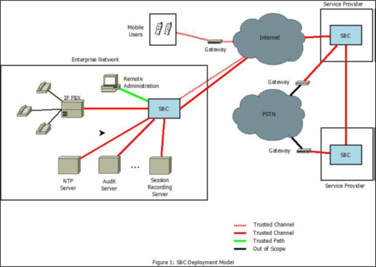

first first | Daisy Diff compare report.
Click on the changed parts for a detailed description. Use the left and right arrow keys to walk through the modifications. |
last  |
| first | Daisy Diff compare report.
Click on the changed parts for a detailed description. Use the left and right arrow keys to walk through the modifications. |
last |

| Version | Date | Comment |
|---|---|---|
| 1.0 | 2022-12-05 | Initial Release |
| 2.0 | 2026-03-17 | Apply NIAP Technical Decisions, Update to CC:2022 |
|
Assurance
| Grounds for confidence that a TOE meets the SFRs [CC]. |
|
Base Protection Profile (Base-PP)
| Protection Profile used as a basis to build a PP-Configuration. |
|
Collaborative Protection Profile (cPP)
| A Protection Profile developed by international technical communities and approved by multiple schemes. |
|
Common Criteria (CC)
| Common Criteria for Information Technology Security Evaluation (International Standard ISO/IEC 15408). |
|
Common Criteria Testing Laboratory
| Within the context of the Common Criteria Evaluation and Validation Scheme (CCEVS), an IT security evaluation facility accredited by the National Voluntary Laboratory Accreditation Program (NVLAP) and approved by the NIAP Validation Body to conduct Common Criteria-based evaluations. |
|
Common Evaluation Methodology (CEM)
| Common Evaluation Methodology for Information Technology Security Evaluation. |
|
Direct Rationale
| A type of Protection Profile, PP-Module, or Security Target in which the security problem definition (SPD) elements are mapped directly to the SFRs and possibly to the security objectives for the operational environment. There are no security objectives for the TOE. |
|
Distributed TOE
| A TOE composed of multiple components operating as a logical whole. |
|
Operational Environment (OE)
| Hardware and software that are outside the TOE boundary that support the TOE functionality and security policy. |
|
Protection Profile (PP)
| An implementation-independent set of security requirements for a category of products. |
|
Protection Profile Configuration (PP-Configuration)
| A comprehensive set of security requirements for a product type that consists of at least one Base-PP and at least one PP-Module. |
|
Protection Profile Module (PP-Module)
| An implementation-independent statement of security needs for a TOE type complementary to one or more Base-PPs. |
|
Security Assurance Requirement (SAR)
| A requirement to assure the security of the TOE. |
|
Security Functional Requirement (SFR)
| A requirement for security enforcement by the TOE. |
|
Security Target (ST)
| A set of implementation-dependent security requirements for a specific product. |
|
Target of Evaluation (TOE)
| The product under evaluation. |
|
TOE Security Functionality (TSF)
| The security functionality of the product under evaluation. |
|
TOE Summary Specification (TSS)
| A description of how a TOE satisfies the SFRs in an ST. |
|
Enterprise Session Controller (ESC)
| A voice/video over IP (VVoIP) infrastructure device that is used to set up and tear down calls between VVoIP endpoints. |
|
H.323
| A communications protocol defined by the ITU Telecommunications Standardization Sector (ITU-T) that is used for creating, modifying, and terminating multimedia sessions with multiple participants. |
|
Media Gateway Control Protocol (MGCP)
| A means of communication between a media gateway and a media gateway controller. |
|
Secure Real-Time Transport Protocol (SRTP)
| A protocol that is used to provide multimedia (voice/video) streaming services with added security of encryption, message authentication and integrity, and replay protection. |
|
Session Initiation Protocol (SIP)
| A communications protocol defined by the Internet Engineering Task Force (IETF) that is used for creating, modifying, and terminating multimedia sessions with multiple participants. |
The following diagram represents a typical deployment of the TOE and its operational environment (OE). Note that the TOE boundary is limited to the physical boundary of the SBC device itself, and the trusted channels/paths that are established by the SBC.

This PP defines no Assumptions beyond those defined in the claimed Base-PP(s).
All assumptions for the OE of the Base-PP also apply to this PP-Module. A.NO_THRU_TRAFFIC_PROTECTION is still operative, but only for the interfaces in the TOE that are defined by the Base-PP and not the PP-Module.These assumptions are made on the Operational Environment (OE) in order to be able to ensure that the security functionality specified in the PP-Module can be provided by the TOE. If the TOE is placed in an OE that does not meet these assumptions, the TOE may no longer be able to provide all of its security functionality.
This PP defines no Organizational Security Policies beyond those defined in the claimed Base-PP(s).
| Assumption or OSP | Security Objectives | Rationale |
| T.QQQQ | O.QQQQ | QQQQ |
| A.QQQQ | OE.QQQQ | QQQQ |
This SFR has been modified to mandate the use of TLS for inter-TSF trusted channels in the TOE. Any element not mentioned in this section is unchanged from its original definition.
The text of FTP_ITC.1.1 is replaced with:
FTP_ITC.1.1 The TSF shall be capable of using TLS as defined in the Functional Package for TLS and [selection: IPsec, SSH as defined in the Functional Package for SSH, DTLS as defined in the Functional Package for TLS, HTTPS, no other protocol ] to provide a trusted communication channel between itself and authorized IT entities supporting the following capabilities: audit server, [selection: authentication server, [assignment: other capabilities], no other capabilities] that is logically distinct from other communication channels and provides assured identification of its endpoints and protection of the channel data from disclosure and detection of modification of the channel data.
FTP_ITC.1.2: The TSF shall permit [the TSF, the authorized IT entities] to initiate communication via the trusted channel.
Application Note: TLS is mandated for SIP trunking as required by FIA_SIPT_EXT.1.
The following rationale provides justification for each SFR for the TOE, showing that the SFRs are suitable to address the specified threats:
| Threat | Addressed by | Rationale |
|---|---|---|
| T.MALICIOUS_TRAFFIC | FAU_ARP_EXT.1 | Mitigates the threat by defining the ability to generate security violations that are transmitted to external entities. |
| FAU_GEN.1/SBC | Mitigates the threat by iterating a Base-PP requirement to define additional auditable events that are specific to SBC functionality. | |
| FAU_SAA.1 | Mitigates the threat by defining a set of rules to monitor auditable events for potential security violations. | |
| FAU_SEL.1 | Mitigates the threat by allowing for some monitoring functions to be selectively enabled and disabled as needed so that the generation of lower-priority audit records can be suppressed when it is not practical to generate those records for performance reasons. | |
| FTP_ITC.1/ARP | Mitigates the threat by defining the trusted channel used to securely communicate potential security violations. | |
| T.NETWORK_ACCESS | FAU_ARP_EXT.1 | Mitigates the threat by defining the ability to generate security violations that are transmitted to external entities. |
| FAU_GEN.1/SBC | Mitigates the threat by iterating a Base-PP requirement to define additional auditable events that are specific to SBC functionality. | |
| FAU_SAA.1 | Mitigates the threat by defining a set of rules to monitor auditable events for potential security violations. | |
| FAU_SEL.1 | Mitigates the threat by allowing for some monitoring functions to be selectively enabled and disabled as needed so that the generation of lower-priority audit records can be suppressed when it is not practical to generate those records for performance reasons. | |
| FCS_SRTP_EXT.1 | Mitigates the threat by defining the TOE’s implementation of the SRTP protocol that is used to protect VVoIP endpoint communications. | |
| FDP_IFC.1 | Mitigates the threat by defining a B2BUA policy so that VVoIP endpoints are only connected to each other through the TOE as an intermediary. | |
| FDP_IFF.1 | Mitigates the threat by defining the specific rules that the B2BUA policy enforces. | |
| FFW_ACL_EXT.1 | Mitigates the threat by defining capabilities for traffic filtering of network packets. | |
| FFW_ACL_EXT.2 | Mitigates the threat by defining specific methods of stateful traffic inspection for specific protocols. | |
| FFW_DPI_EXT.1 | Mitigates the threat by defining the capability to perform DPI for certain network traffic. | |
| FFW_NAT_EXT.1 | Mitigates the threat by defining the use of NAT to obfuscate IP addresses of endpoint devices on the TOE’s internal network. | |
| FIA_SIPT_EXT.1 | Mitigates the threat by defining secure behavior for SIP trunking. | |
| FMT_SMF.1/SBC | Mitigates the threat by defining TSF management functions that require authorizations to use. | |
| FTP_ITC.1/ARP | Mitigates the threat by defining how communications of potential security violations are protected. | |
| FTP_ITC.1/ESC | Mitigates the threat by defining how communications with an external ESC are protected. | |
| FTP_ITC.1/VVoIP | Mitigates the threat by defining how communications with an external VVoIP endpoint are protected. | |
| FTP_ITC.1/H323 (selection-based) | Mitigates the threat by defining H.323 as a permitted method of protected communications for when a conformant TOE implements this logical interface. | |
| T.RESOURCE_EXHAUSTION | FAU_ARP_EXT.1 | Mitigates the threat by defining the ability to generate security violations that are transmitted to external entities. |
| FAU_GEN.1/SBC | Mitigates the threat by iterating a Base-PP requirement to define additional auditable events that are specific to SBC functionality. | |
| FAU_SAA.1 | Mitigates the threat by defining a set of rules to monitor auditable events for potential security violations. | |
| FAU_SEL.1 | Mitigates the threat by allowing for some monitoring functions to be selectively enabled and disabled as needed so that the generation of lower-priority audit records can be suppressed when it is not practical to generate those records for performance reasons. | |
| FFW_ACL_EXT.1 | Mitigates the threat by defining capabilities for traffic filtering of network packets. | |
| FFW_ACL_EXT.2 | Mitigates the threat by defining specific methods of stateful traffic inspection for specific protocols. | |
| FFW_DPI_EXT.1 | Mitigates the threat by defining the capability to perform DPI for certain network traffic. | |
| FMT_SMF.1/SBC | Mitigates the threat by defining TSF management functions that require authorizations to use. | |
| FRU_PRS_EXT.1 | Mitigates the threat by requiring the TSF to implement priority of service to ensure that low-priority traffic cannot cause a DoS. | |
| FRU_RSA.1 | Mitigates the threat by enforcing quotas for TSF resources to prevent DoS. | |
| FTP_ITC.1/ARP | Mitigates the threat by defining the trusted channel used to securely communicate potential security violations. | |
| T.UNTRUSTED_COMMUNICATION_CHANNELS | FCS_SRTP_EXT.1 | Mitigates the threat by defining the TOE’s implementation of the SRTP protocol that is used to protect VVoIP endpoint communications. |
| FIA_SIPT_EXT.1 | Mitigates the threat by defining secure behavior for SIP trunking. | |
| FTP_ITC.1/ARP | Mitigates the threat by defining how communications of potential security violations are protected. | |
| FTP_ITC.1/ESC | Mitigates the threat by defining how communications with an external ESC are protected. | |
| FTP_ITC.1/VVoIP | Mitigates the threat by defining how communications with an external VVoIP endpoint are protected. | |
| FTP_ITC.1/H323 (selection-based) | Mitigates the threat by defining H.323 as a permitted method of protected communications for when a conformant TOE implements this logical interface. | |
| T.USER_DATA_REUSE | FDP_IFC.1 | Mitigates the threat by defining a B2BUA policy that is used by the TOE to establish connections between VVoIP endpoints. |
| FDP_IFF.1 | Mitigates the threat by defining the rules that the B2BUA policy enforces. | |
| FFW_NAT_EXT.1 | Mitigates the threat by requiring the use of NAT to maintain a unique relationship between how external entities identify entities on the TOE’s internal network and how they are actually addressed by that network. | |
| FIA_SIPT_EXT.1 | Mitigates the threat by defining the use of SIP trunking, which requires authentication of endpoints to ensure data is only transmitted to the intended endpoint. | |
| FIA_SIPS_EXT.1 (implementation-based) | Mitigates the threat by defining an optional capability to handle SIP registration in cases where the OE does not include an ESC that will provide that functionality. |
| PP-Module Threat, Assumption, OSP | Consistency Rationale |
|---|---|
| T.MALICIOUS_TRAFFIC | The Base-PP does not define a threat for malicious traffic because all of its security-relevant external interfaces define the network device as the endpoint. This PP-Module defines interfaces where the TOE is facilitating a connection between two external entities, such that traffic between them will flow through the TOE as opposed to and from the TOE. This threat is consistent with the Base-PP because it is only applied to the interfaces defined in this PP-Module where it is relevant; it does not apply to the interfaces defined in the Base-PP. |
| T.NETWORK_ACCESS | The Base-PP does not define a threat for access to network resources because all of its security-relevant external interfaces define the network device as the endpoint. This PP-Module defines interfaces where the TOE is facilitating a connection between two external entities, such that traffic between them will flow through the TOE as opposed to into and out of the TOE. This threat is consistent with the Base-PP because it is only applied to the interfaces defined in this PP-Module where it is relevant; it does not apply to the interfaces defined in the Base-PP. |
| T.RESOURCE_EXHAUSTION | The threat of network traffic causing the TOE to be unable to perform its functions is similar to T.SECURITY_FUNCTIONALITY_FAILURE in the Base-PP because the intent of the threat is to cause the TSF to fail. The Base-PP does not define DoS protections because it does not define logical interfaces that are intended to process large volumes of network traffic. This PP-Module extends the threat by defining a specific example of it that applies to an SBC device that has this functionality. |
| T.UNTRUSTED_COMMUNICATION_CHANNELS | The threat of disclosure of data in transit is fundamentally the same as the NDcPP threat with the same name. This PP-Module extends the threat to apply to the external interfaces that are defined specifically in support of SBC functions. |
| T.USER_DATA_REUSE | The Base-PP does not define a threat of user data transmitted to the wrong destination because all of its security-relevant external interfaces define the network device as the endpoint. This PP-Module defines interfaces where the TOE is facilitating a connection between two external entities, such that traffic between them will flow through the TOE as opposed to and from the TOE. This threat is consistent with the Base-PP because it is only applied to the interfaces defined in this PP-Module where it is relevant; it does not apply to the interfaces defined in the Base-PP. |
| QQQQ | |
| A.QQQQ |
| PP-Module OE Objective | Consistency Rationale |
|---|---|
| OE.QQQQ |
| PP-Module Requirement | Consistency Rationale |
|---|---|
| Modified SFRs | |
| FTP_ITC.1 | This PP-Module refines the Base-PP SFR to mandate the use of one of the trusted protocols defined by the Base-PP. |
| Additional SFRs | |
| This PP-Module does not add any requirements when the NDcPP is the base. | |
| Mandatory SFRs | |
| FAU_ARP_EXT.1 | This SFR applies to the generation of alerts when a given auditable event is detected, which is beyond the original scope of the Base-PP. |
| FAU_GEN.1/SBC | This SFR is an iteration of a Base-PP requirement that defines additional auditable events for SBC functionality that the Base-PP could not be expected to cover. |
| FAU_SAA.1 | This SFR applies to the detection of auditable events as potential security violations requiring the generation of alerts, which is beyond the original scope of the Base-PP. |
| FAU_SEL.1 | This SFR applies to the behavior of the audit function with respect to the auditable events defined in this PP-Module. It does not affect the audit functions that apply to the Base-PP. |
| FCS_SRTP_EXT.1 | This SFR applies to the implementation of SRTP, which is a protocol that is not used for any Base-PP functionality. |
| FDP_IFC.1 | This SFR applies to the TOE’s implementation of a B2BUA policy, which applies to the TOE’s through-traffic interfaces and is therefore beyond the original scope of the Base-PP. |
| FDP_IFF.1 | This SFR applies to the TOE’s implementation of a B2BUA policy, which applies to the TOE’s through-traffic interfaces and is therefore beyond the original scope of the Base-PP. |
| FFW_ACL_EXT.1 | This SFR applies to traffic filtering, which applies to the TOE’s through-traffic interfaces and is therefore beyond the original scope of the Base-PP. |
| FFW_ACL_EXT.2 | This SFR applies to traffic filtering, which applies to the TOE’s through-traffic interfaces and is therefore beyond the original scope of the Base-PP. |
| FFW_DPI_EXT.1 | This SFR applies to DPI, which applies to the TOE’s through-traffic interfaces and is therefore beyond the original scope of the Base-PP. |
| FFW_NAT_EXT.1 | This SFR applies to NAT, which applies to the TOE’s through-traffic interfaces and is therefore beyond the original scope of the Base-PP. |
| FIA_SIPT_EXT.1 | This SFR applies to SIP trunking, which is a logical interface that is beyond the original scope of the Base-PP. |
| FMT_SMF.1/SBC | This SFR is an iteration of a Base-PP requirement that defines additional management functions for SBC functionality that the Base-PP could not be expected to cover. |
| FRU_PRS_EXT.1 | This SFR applies to enforcement of bandwidth priority of service, which is a mechanism that is beyond the scope of the Base-PP and does not interfere with the ability of the Base-PP to process valid network traffic securely. |
| FRU_RSA.1 | This SFR applies to enforcement of resource quotas, which is a mechanism that is beyond the scope of the Base-PP and does not interfere with the ability of the Base-PP to process valid network traffic securely. |
| FTP_ITC.1/ARP | This SFR is used to specify the trusted channel used for transmission of alerts as specified in FAU_ARP_EXT.1. |
| FTP_ITC.1/ESC | This PP-Module iterates an SFR defined in the Base-PP to define a new external interface for communications with an ESC. This does not interfere with the ability of the Base-PP to enforce its security functionality on the existing logical interfaces. |
| FTP_ITC.1/VVoIP | This PP-Module iterates an SFR defined in the Base-PP to define a new external interface for communications with a VVoIP endpoint. This does not interfere with the ability of the Base-PP to enforce its security functionality on the existing logical interfaces. |
| Optional SFRs | |
| This PP-Module does not define any Optional requirements. | |
| Objective SFRs | |
| This PP-Module does not define any Objective requirements. | |
| Implementation-dependent SFRs | |
| FIA_SIPS_EXT.1 | This SFR applies to SIP registration, which is beyond the original scope of the Base-PP. |
| Selection-based SFRs | |
| FTP_ITC.1/H323 | This PP-Module iterates an SFR defined in the Base-PP to define a new external interface for communications using H.323. This does not interfere with the ability of the Base-PP to enforce its security functionality on the existing logical interfaces. |
This PP-Module does not define any Strictly Optional SFRs or SARs.
This PP-Module does not define any Objective SFRs.
| Functional Class | Functional Components |
|---|---|
| Cryptographic Support (FCS) | FCS_SRTP_EXT Secure Real-Time Transport Protocol
|
| Firewall (FFW) | FFW_ACL_EXT Traffic Filtering
FFW_DPI_EXT Deep Packet Inspection FFW_NAT_EXT Network Address Translation |
| Identification and Authentication (FIA) | FIA_SIPS_EXT Session Initiation Protocol Registration
FIA_SIPT_EXT Session Initiation Protocol Trunking |
| Resource Utilization (FRU) | FRU_PRS_EXT Limited Priority of Service
|
| Security Audit (FAU) | FAU_ARP_EXT Security Audit Automatic Response
|
FCS_SRTP_EXT.1, Secure Real-Time Transport Protocol, requires the TSF to implement SRTP in accordance with specified standards, and for some of this functionality to be configurable.
The following actions could be considered for the management functions in FMT:
There are no auditable events foreseen.
| Hierarchical to: | No other components. |
| Dependencies to: | FMT_SMR.1 Security Roles FTP_ITC.1 Inter-TSF Trusted Channel |
FFW_ACL_EXT.1, Real-Time Communications Traffic Filtering, requires the TSF to implement traffic filtering rules based on network protocol attributes.
FFW_ACL_EXT.2, Stateful VVoIP Traffic Filtering, requires the TSF to perform stateful traffic filtering on traffic that matches certain unauthorized state conditions.
The following actions could be considered for the management functions in FMT:
The following actions should be auditable if FAU_GEN Security audit data generation is included in the PP/ST:
| Hierarchical to: | No other components. |
| Dependencies to: | None |
No specific management functions are identified.
The following actions should be auditable if FAU_GEN Security audit data generation is included in the PP/ST:
| Hierarchical to: | No other components. |
| Dependencies to: | None |
FFW_DPI_EXT.1, Deep Packet Inspection, defines traffic that the TSF is expected to be able to perform DPI on, the specific elements of that traffic that is subject to DPI, and the action that is taken when invalid traffic is discovered by the DPI mechanism.
No specific management functions are identified.
The following actions should be auditable if FAU_GEN Security audit data generation is included in the PP/ST:
| Hierarchical to: | No other components. |
| Dependencies to: | None |
FFW_NAT_EXT.1, Topology Hiding/NAT Traversal, requires the TSF to implement NAT for defined network protocols.
The following actions could be considered for the management functions in FMT:
There are no auditable events foreseen.
| Hierarchical to: | No other components. |
| Dependencies to: | FDP_IFC.1 Subset Information Flow Control FMT_SMR.1 Security Roles |
FIA_SIPT_EXT.1, Session Initiation Protocol Trunking, requires the TSF to implement SIP trunking using defined authentication and encryption methods.
The following actions could be considered for the management functions in FMT:
The following actions should be auditable if FAU_GEN Security audit data generation is included in the PP/ST:
| Hierarchical to: | No other components. |
| Dependencies to: | FCS_TLSC_EXT.1 TLS Client Protocol without Mutual Authentication FCS_TLSC_EXT.2 TLS Client Support for Mutual Authentication FCS_TLSS_EXT.1 TLS Server Protocol without Mutual Authentication FCS_TLSC_EXT.2 TLS Server Support for Mutual Authentication FTP_ITC.1 Inter-TSF Trusted Channel |
FIA_SIPS_EXT.1, Session Initiation Protocol Registration, defines requirements for how the TSF must implement SIP registration, including protocol implementations and constraints on authentication.
The following actions could be considered for the management functions in FMT:
The following actions should be auditable if FAU_GEN Security audit data generation is included in the PP/ST:
| Hierarchical to: | No other components. |
| Dependencies to: | None |
FRU_PRS_EXT.1, Limited Priority of Service, requires the TSF to implement mechanisms to limit the amount of network bandwidth that is available to subjects based on certain attributes.
No specific management functions are identified.
There are no auditable events foreseen.
| Hierarchical to: | No other components. |
| Dependencies to: | None |
FAU_ARP_EXT.1, Security Audit Automatic Response, defines the mechanism used by the TOE to securely transmit security alerts to the OE.
No specific management functions are identified.
There are no auditable events foreseen.
| Hierarchical to: | No other components. |
| Dependencies to: | FAU_SAA.1 Potential Violation Analysis FTP_ITC.1 Inter-TSF Trusted Channel |
This appendix lists requirements that should be considered satisfied by products successfully evaluated against this PP-Module. These requirements are not featured explicitly as SFRs and should not be included in the ST. They are not included as standalone SFRs because it would increase the time, cost, and complexity of evaluation. This approach is permitted by [CC] Part 1, 8.3 Dependencies between components.
This information benefits systems engineering activities which call for inclusion of particular security controls. Evaluation against the PP-Module provides evidence that these controls are present and have been evaluated.
Table 9: Implicitly Satisfied Requirements| Requirement | Rationale for Satisfaction |
| FMT_MSA.3 – Static Attribute Initialization | FDP_IFF.1 has a dependency on FMT_MSA.3 to define the default security posture of security attributes for the purpose of information flow control enforcement. This SFR has not been defined by this PP-Module because the enforcement of FDP_IFF.1 is not dependent on the initial state of security attributes. For example, FDP_IFF.1.2 requires the TSF to determine if a communication attempt is valid before authorizing it. This is true regardless of whether the default value of security attributes associated with the connection attempt are permissive or restrictive; there is no difference in how the TSF determines “validity” in this case.
The default values of security attributes do not cause the information flow control policy to behave differently for those rules that must always be enforced by the TSF. FDP_IFF.1.4 requires that all allowlisted calling parties be authorized while all denylisted calling parties be rejected. It does not matter for the purpose of enforcing this SFR whether the absence of a calling party from both the allowlist and the denylist means they are authorized or rejected by default. |
| Requirement | Description | Distributed TOE SFR Allocation |
| FAU_ARP_EXT.1 | Security Audit Automatic Response | Feature Dependent |
| FAU_GEN.1/SBC | Audit Data Generation (Session Border Controller) | All |
| FAU_SAA.1 | Potential Violation Analysis | Feature Dependent |
| FAU_SEL.1 | Selective Audit | Feature Dependent |
| FCS_SRTP_EXT.1 | Secure Real-Time Transport Protocol | Feature Dependent |
| FDP_IFC.1 | Subset Information Flow Control | Feature Dependent |
| FDP_IFF.1 | Simple Security Attributes | Feature Dependent |
| FFW_ACL_EXT.1 | Real-Time Communications Traffic Filtering | Feature Dependent |
| FFW_ACL_EXT.2 | Stateful VVoIP Traffic Filtering | Feature Dependent |
| FFW_DPI_EXT.1 | Deep Packet Inspection | Feature Dependent |
| FFW_NAT_EXT.1 | Topology Hiding/NAT Traversal | Feature Dependent |
| FIA_SIPS_EXT.1 (implementation-based) | Session Initiation Protocol Registration | Feature Dependent |
| FIA_SIPT_EXT.1 | Session Initiation Protocol Trunking | Feature Dependent |
| FMT_SMF.1/SBC | Specification of Management Functions (SBC) | Feature Dependent |
| FRU_PRS_EXT.1 | Limited Priority of Service | Feature Dependent |
| FRU_RSA.1 | Maximum Quotas | Feature Dependent |
| FTP_ITC.1/ESC | Inter-TSF Trusted Channel (ESC Communications) | Feature Dependent |
| FTP_ITC.1/H323 (selection-based) | Inter-TSF Trusted Channel (H.323 Communications) | Feature Dependent |
| FTP_ITC.1/VVoIP | Inter-TSF Trusted Channel (VVoIP Communications) | Feature Dependent |
| Acronym | Meaning |
|---|---|
| ACL | Access Control List |
| B2BUA | Back-To-Back User Agent |
| Base-PP | Base Protection Profile |
| CC | Common Criteria |
| CDR | Call Detail Record |
| CEM | Common Evaluation Methodology |
| cPP | Collaborative Protection Profile |
| DoS | Denial of Service |
| DPI | Deep Packet Inspection |
| ESC | Enterprise Session Controller |
| IP-PBX | Internet Protocol Public Branch Exchange |
| MGCP | Media Gateway Control Protocol |
| NAT | Network Address Translation |
| OE | Operational Environment |
| PP | Protection Profile |
| PP-Configuration | Protection Profile Configuration |
| PP-Module | Protection Profile Module |
| QoS | Quality of Service |
| RTCP | RTP Control Protocol |
| RTP | Real-Time Transport Protocol |
| SAR | Security Assurance Requirement |
| SDES | Security Descriptions for Media Streams |
| SDP | Session Description Protocol |
| SFR | Security Functional Requirement |
| SIP | Session Initiation Protocol |
| SRTP | Secure Real-Time Transport Protocol |
| ST | Security Target |
| TOE | Target of Evaluation |
| TSF | TOE Security Functionality |
| TSFI | TSF Interface |
| TSS | TOE Summary Specification |
| VVoIP | Voice/Video Over IP |
| Identifier | Title |
|---|---|
| [] | |
| [CC] | Common Criteria for Information Technology Security Evaluation -
|
| [CEM] | Common Methodology for Information Technology Security Evaluation -
|
| [NDcPP] | collaborative Protection Profile for Network Devices, Version 4.0, December 22, 2025 |